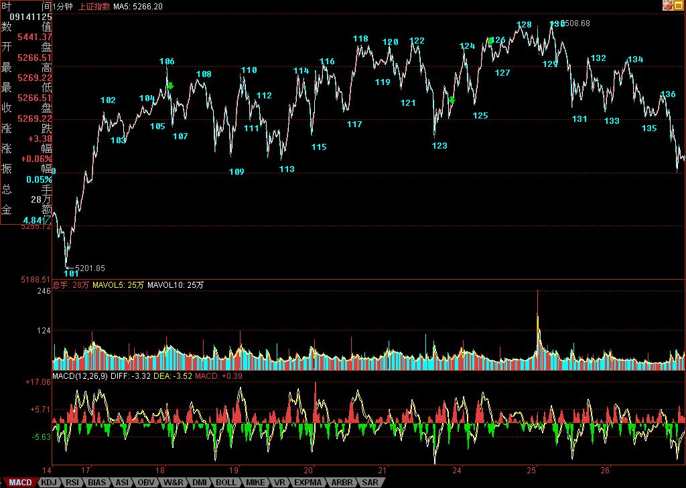

月亮的力量有多大，各位这两天也见识了。可以不相信月饼，但一定要相信月亮。为什么？连地球上的潮汐都要抄袭月亮，那破股票难道比潮汐还要潮汐？昨天已经明确告诉“如果不是有人为了新股护盘，今天可不止跌这么点”，昨天没跌够，今天继续，就这么简单。
今天早上的上攻，一没有突破昨天的第三类卖点，二反而是形成标准的顶分型第三根K线的上冲，不管你相信不相信本ID的理论，反正后面的走势，如教科书般。现在的走势十分简单，一个1分钟的走势正离开前面那5分钟中枢，这1分钟走势什么时候能完成，就看后面的走势了，而完成以后的回拉才是最重要的，是否能形成第三类卖点，这才是最近走势的关键，如果形成，那这两天，最多只能算田亮的1米板，后面是表演3米还是10米的，这对于观众，其实反而已经不重要了。
个股方面，今天水井坊终于像水井坊应该那样水井坊了一把，看看这股票，就知道什么叫折腾。几乎一年，就在这里搞，为什么？就是因为里面有着N伙人，还都看好，所以就互相折腾，这次是真是假？天知道。为什么？因为后面谁只要一先动手，N方又一起开始折腾。其实，这个游戏很好玩，只是浪费了一只质地如此好的股票。
不过，好股票最终都要发光的。就像000999，从本ID在这里开始讲到现在，快10个月了，开始6元抢东西，然后在12元上下和汉奸基金的斗法，后来又涌入一群无聊人在15元上，东搞西搞，中间传闻漫天飞，结果怎么样？请看看新进来的大股东掏了多少钱，一个掏了这么多钱的人，要干什么大事，难道还有什么疑问？本ID反复说要海枯石烂，但真正干起来，估计很多人就会被市场的波动所迷惑了。
每一只股票，都是一个故事，说不完。做完一只股票，你就成了有故事的人了。
再次提醒，昨天说那两只股票，如果大盘有大问题，也会跟着调整的，但由于基本面上潜在大变化，所以市场如果大波动，将提供一个好的介入时机。本ID说的股票，从来都是中长线角度的，有足够的时间让你介入，关键是看好买卖点。
今天可以回答问题到4点半。
